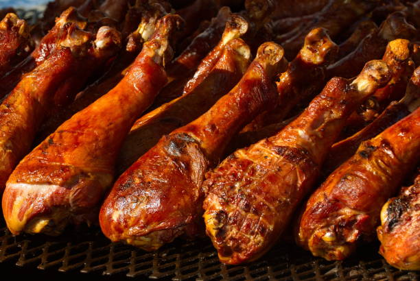

State Fair Chicken Legs

This is a recipe I modified to make state fair turkey legs that can also be used for chicken!
Ingredients
- Paprika
- Salt
- Pepper
- Chili Powder
- Garlic Powder
- Chicken or Turkey Legs
- Cooking Oil
Steps
- Brine Chicken in Salt Water Overnight
- Drain and Pat Legs Dry
- Make rub with Paprika, Salt, Pepper, Chili, and Garlic Powder then mix in a spoonful of cooking oil
- Preheat oven to 425
- Coat Chicken or Turkey with rub evenly as possible
- Roast for 45 minutes or until the legs are to proper cooking temp
- Let cool for about 10-15 minutes